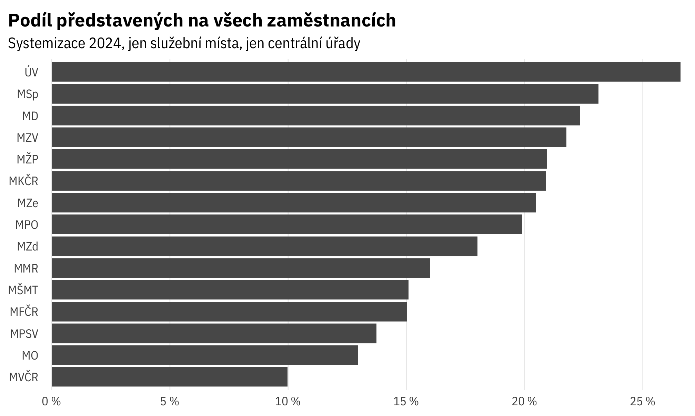
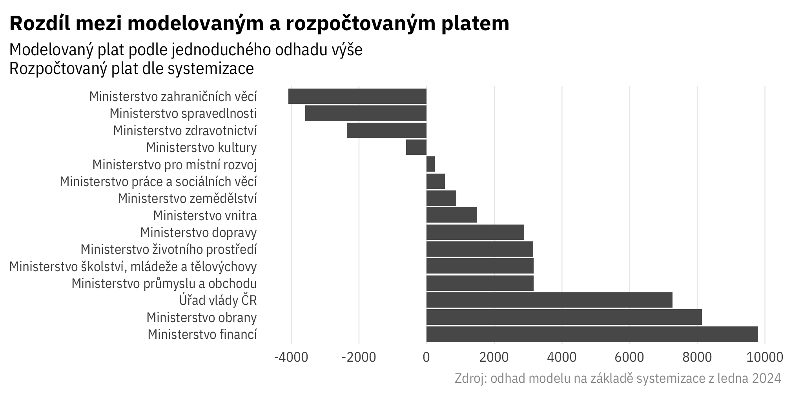
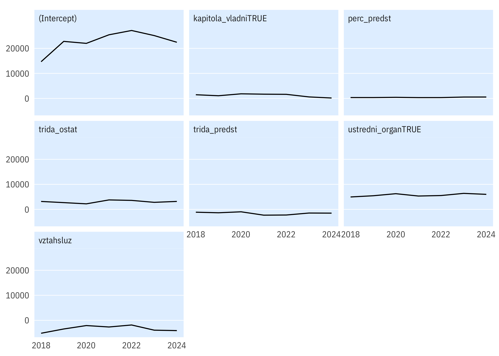

Srovnání: úřady
Průměrné platy podle systemizace

Složení
Podíl managementu (představených)

Platové třídy na ministerstvech

Model průměrného platu
OLS na úrovni skupin (instituce + služební/pracovní poměr), s využitím informací o typu organizace (vládní kapitola, ústřední orgán).

Residuals (níže) pro jednotlivé úřady ukazují, jak moc se skutečný průměrný plat liší od platu, který by odpovídal pouze vlivu proměnných zahrnutých do modelu. V praxi je residual součtem vlivu především průměrné seniority zaměstnanců (což se odráží v platovém stupni) v instituci a pohyblivých složek platu (hlavně odměn a osobního ohodnocení).
Níže rozdíly mezi predikcí a skutečností pouze pro centrální ministerstva:

Vztah mezi skutečným a modelovaným průměrným platem pro různé skupiny organizací a zaměstnanců:
Přesnější ověření modelu
Výsledek
#>
#> Call:
#> lm(formula = plat_prumer ~ perc_predst + trida_predst + trida_ostat +
#> vztah + ustredni_organ + kapitola_vladni, data = syst_platy_for_model_2023)
#>
#> Residuals:
#> Min 1Q Median 3Q Max
#> -15859 -4064 -1436 2847 37274
#>
#> Coefficients:
#> Estimate Std. Error t value Pr(>|t|)
#> (Intercept) 25113.75 4039.29 6.217 4.04e-09 ***
#> perc_predst 544.40 71.89 7.573 2.52e-12 ***
#> trida_predst -1472.97 327.07 -4.504 1.26e-05 ***
#> trida_ostat 2805.66 455.65 6.158 5.49e-09 ***
#> vztahsluz -3941.90 1751.15 -2.251 0.0257 *
#> ustredni_organTRUE 6389.26 1318.45 4.846 2.90e-06 ***
#> kapitola_vladniTRUE 593.64 1231.75 0.482 0.6305
#> ---
#> Signif. codes: 0 '***' 0.001 '**' 0.01 '*' 0.05 '.' 0.1 ' ' 1
#>
#> Residual standard error: 6870 on 164 degrees of freedom
#> Multiple R-squared: 0.5381, Adjusted R-squared: 0.5212
#> F-statistic: 31.85 on 6 and 164 DF, p-value: < 2.2e-16V čase
Pokud model odhadneme zvlášť v jednotlivých letech, jsou koeficienty v čase relativně stabilní.

Residuals pro jednotlivé úřady v čase:
Zdroje
TO DO